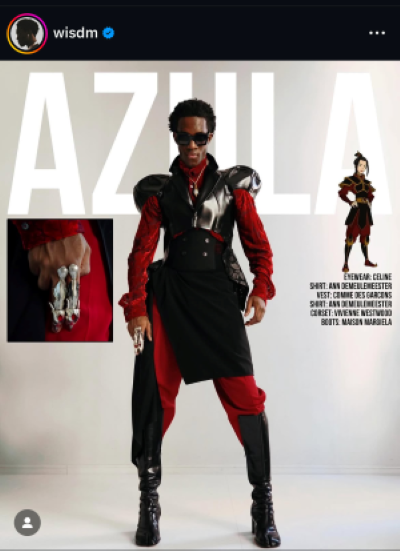
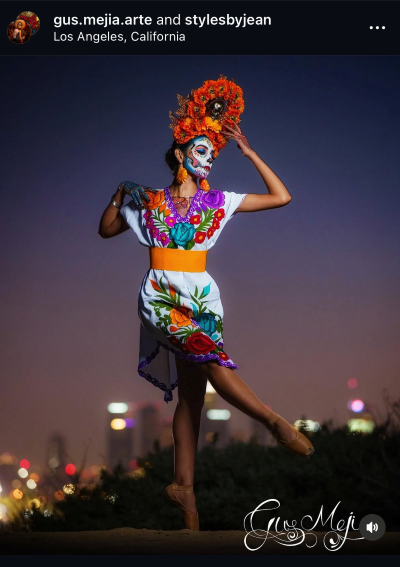
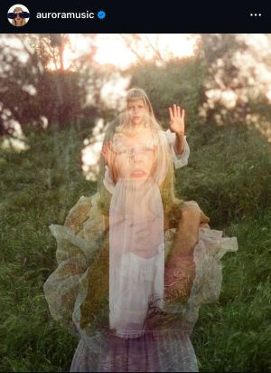

Home
Inspiration
Top Five
My name is Chelsea Hernandez
These are some artist who inspire me
Wisdom Kaye

He is a model and stylist. He has managed to make all his look unique and personal. By using texture and layering he has this style that easily captivates everyone.
Gus Mejia

His photography of different variations of the day of the dead, Catrina. Is not only intersting to see but you can also see different personalities in each girl.
Aurora Arksnes

A beautiful Norewegin singer with a unique voice. Her voice brings both joy and sorrow to the listener. She always had unique performances that alllowed her to stand out.